Martin La Rosa
Crafting end-to-end digital experiences — UI-focused, systems-minded, and no-code fluent.
About
UI-focused.
Systems-minded.
No-code fluent.
5+ years delivering end-to-end digital products across web and mobile. I work closely with PMs and engineers — AI-native practitioner who ships faster using Lovable, Midjourney, and Framer.
Design
No-Code
AI
Research
Selected Work
Recent Projects
components built
to one system
creation
design language
Sportian's web presence had grown organically across multiple initiatives — the real problem wasn't visual, it was the absence of shared rules that slowed every team down.
Live site — new Sportian web experience, migrated to Webflow
Fragmented system, growing visual debt
Sportian is a global sports-tech company (a Globant venture) serving LaLiga, Serie A, and top-tier clubs worldwide. Their web presence had scaled faster than their design rules — inconsistent components, duplicated patterns, and no shared vocabulary between design and dev.
My mandate was to audit, systematize, and migrate — without halting ongoing marketing and product releases.
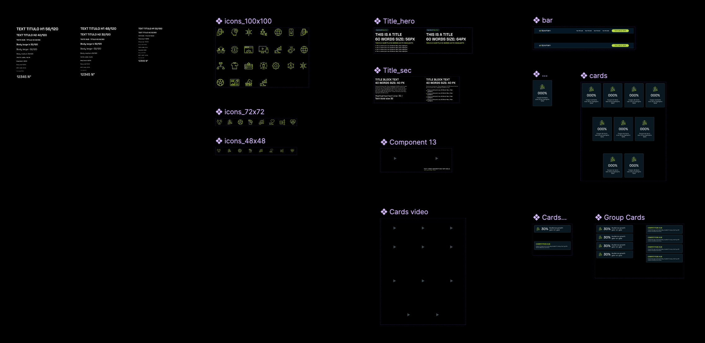
Component architecture — type scale, icon sets & reusable UI blocks built in Figma
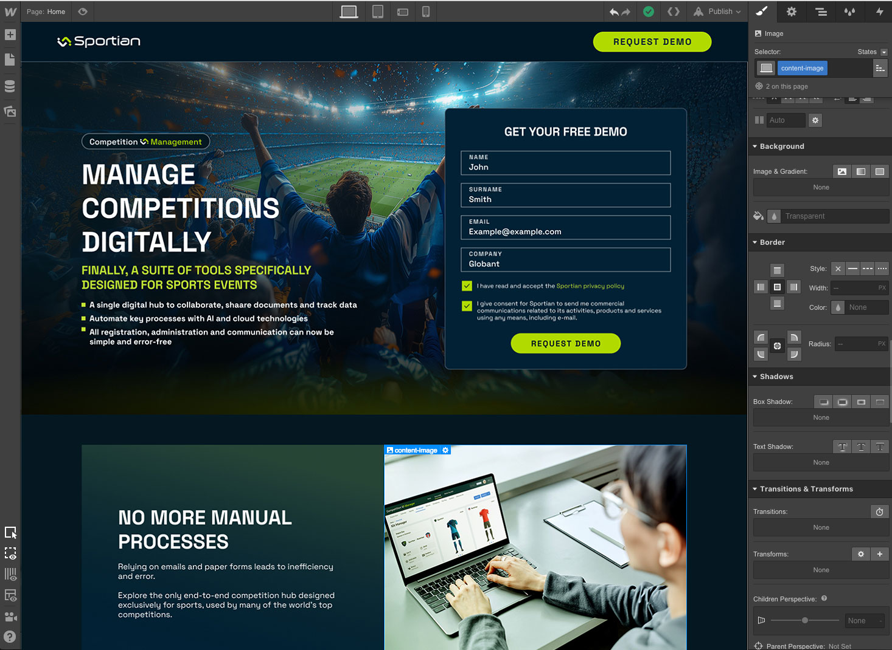
Webflow migration — design system translated into CMS components with zero fidelity loss
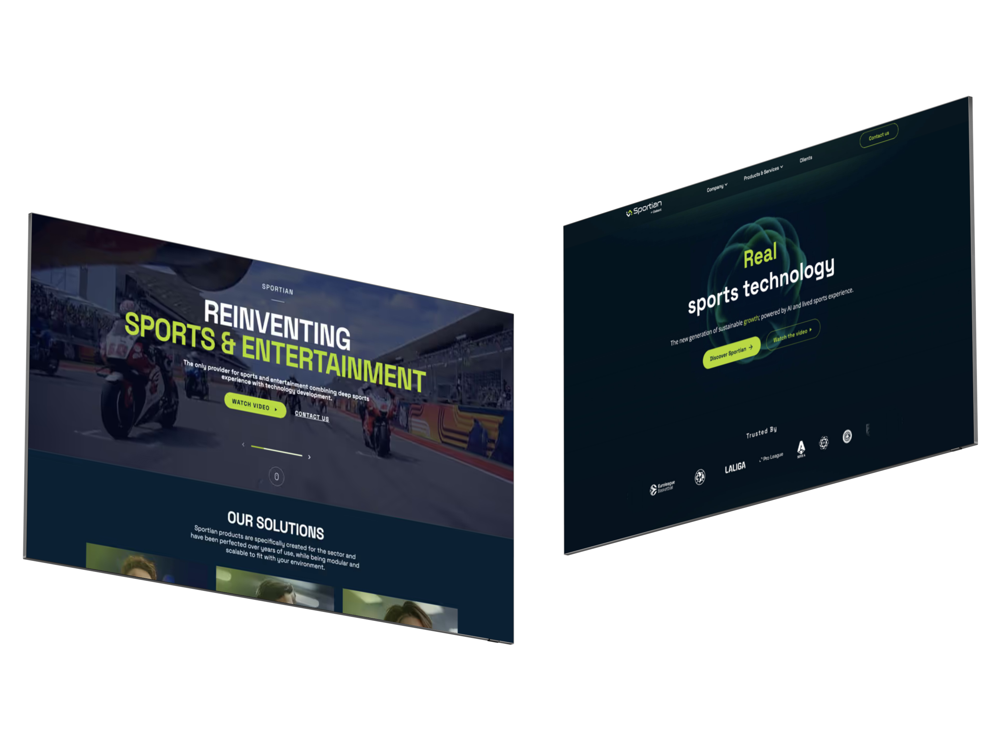
Before vs. After — fragmented system → unified design language

New system in production — reusable components across all Sportian touchpoints
Unified visual language across all web touchpoints
~60% faster page production with reusable Webflow components
80+ visual inconsistencies resolved in a single audit cycle
3 cross-functional teams aligned to one design language
Scalable token architecture ready for future product growth
redesigned
concept defined
SEO-optimized
from scratch
The site wasn't broken — it just had no visual north. Each page was its own island, disconnected from a shared brand direction.
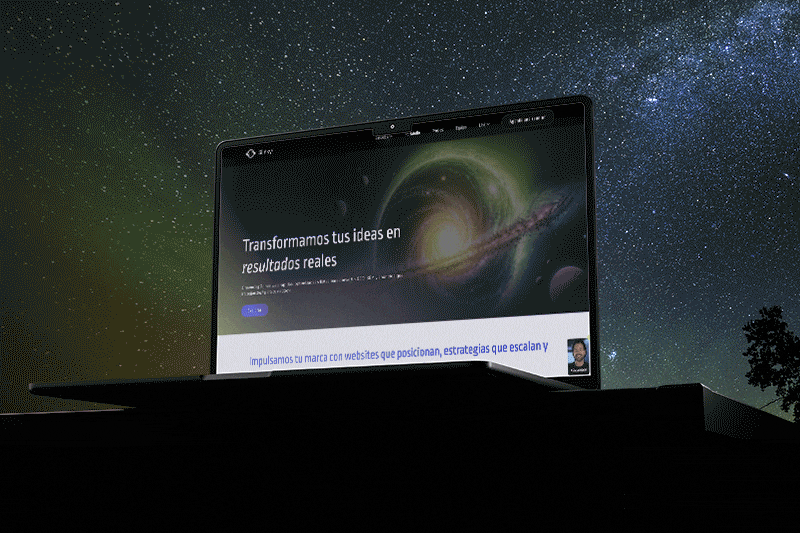
Live site — Slinky creative studio, implemented in Webflow
No visual direction, growing incoherence
Slinky is a creative digital studio offering web design, strategy, and campaigns. Their website had grown without a defined visual concept — inconsistent layouts, unclear hierarchy, and a fragmented brand perception that didn't reflect their creative capabilities.
The challenge: redesign from a strategic visual concept first, then build a scalable, performant site in Webflow.
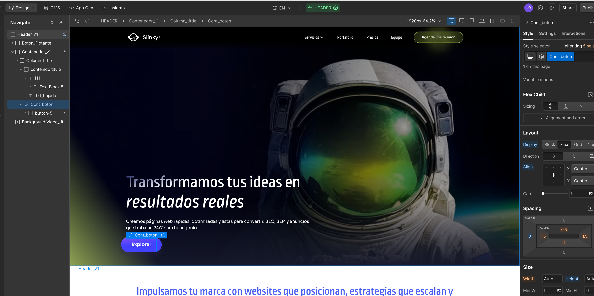
Webflow implementation — reusable components & structured class system
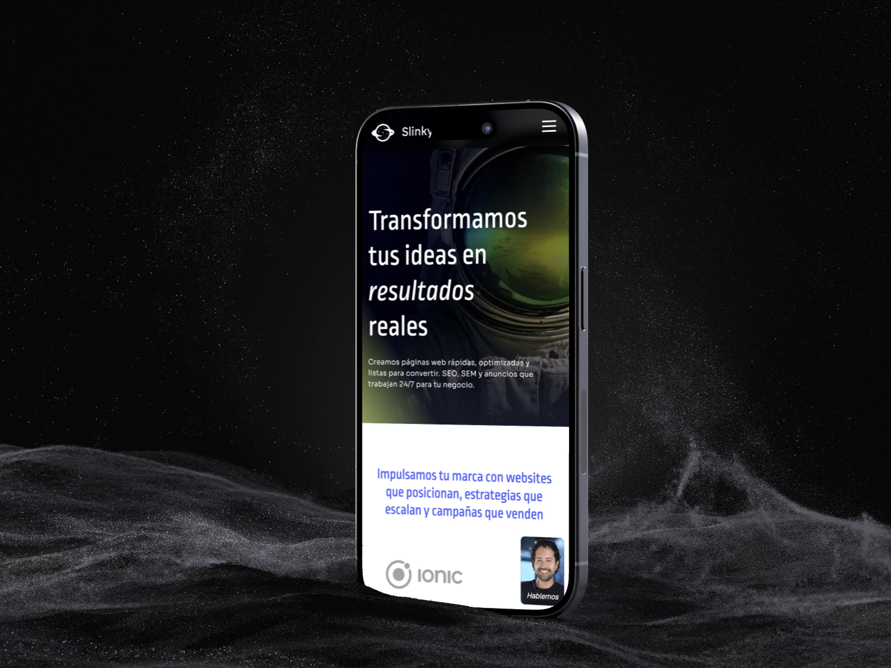
Fully responsive — mobile-first layout with consistent visual concept
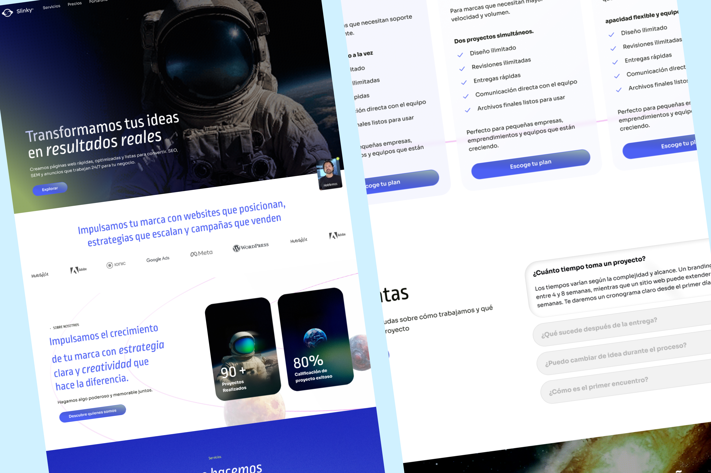
Complete redesign — unified visual language across all pages
Clear visual concept guiding all design decisions
Consistent hierarchy and layout across all pages
Reusable Webflow components for faster updates
Responsive behavior across all devices
SEO & performance improvements post-launch
completion
key step
into one path
from scratch
Users weren't converting — not because the product wasn't good, but because the page never told them clearly what to do next.
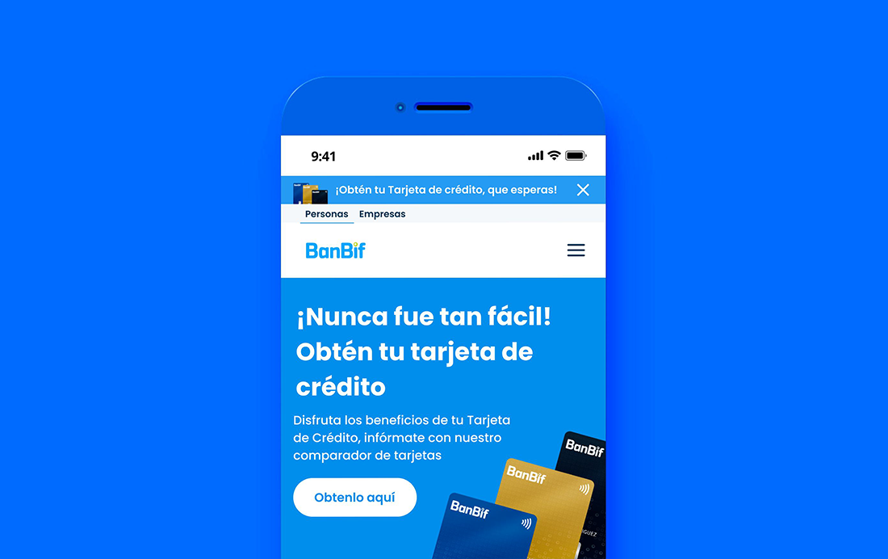
BanBif credit card landing page — redesigned for clarity and conversion
A landing page that didn't convert
BanBif needed to increase credit card applications through their digital channel. The existing landing page had multiple entry points, fragmented messaging, and a form flow that created friction at critical steps — resulting in high drop-off before submission.
My role: own the UX strategy end-to-end — from information architecture and user flow definition to wireframes, prototypes, and handoff — within a fast-moving financial services context.

IA strategy — restructured content hierarchy with a single conversion path

Wireframe flow — progressive disclosure reducing cognitive load at each step
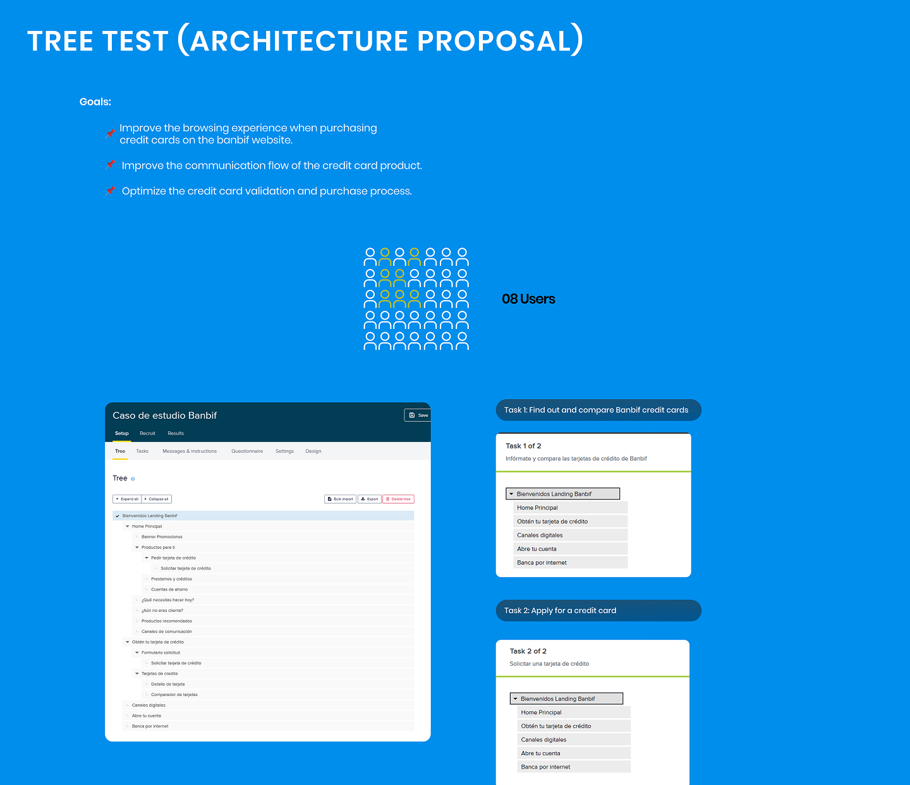
Form states — empty, error, and success variations for consistent feedback
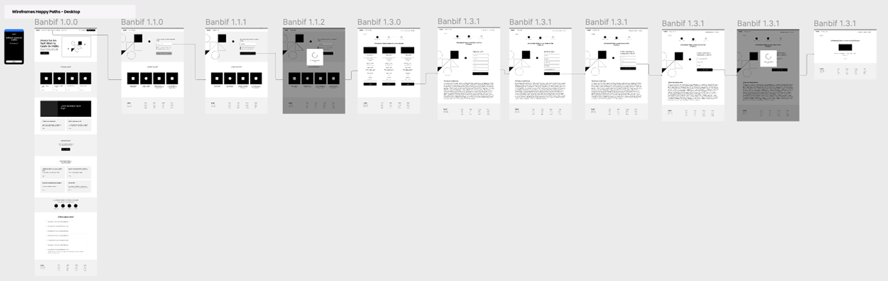
Mobile layout — optimized for the primary access channel (80%+ mobile traffic)
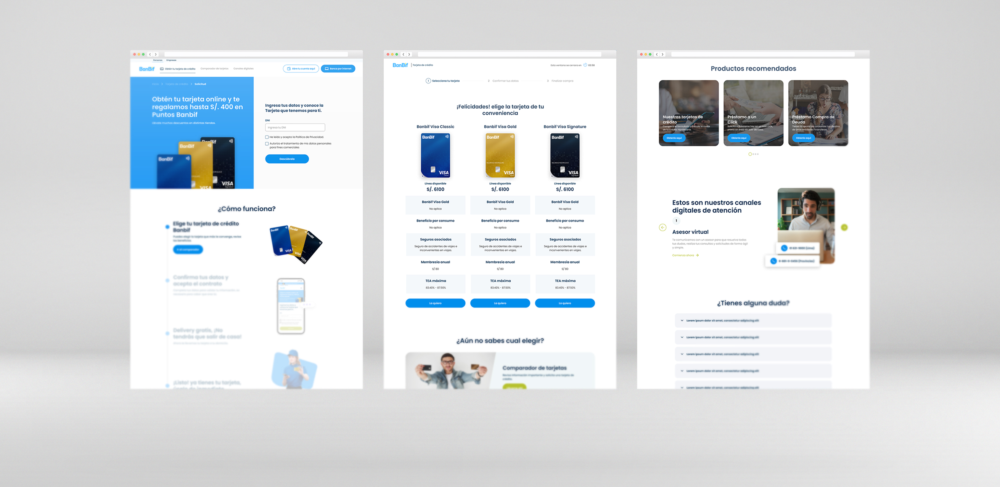
Final design — unified landing page with clear hierarchy and single CTA path
+38% lead form completion rate post-launch
Drop-off reduced at the critical form step
3 fragmented flows consolidated into 1 clear path
Full mobile-first responsive implementation
Reusable Figma components handed off to dev
platforms
coverage
followed
shipped
Working inside a regulated, large-scale system means every pixel has to earn its place — clarity, consistency, and accessibility are non-negotiable.
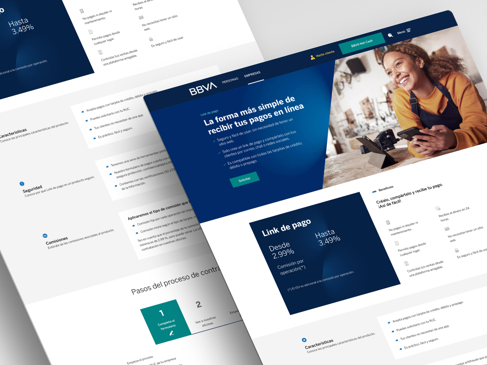
BBVA — digital financial products for web and mobile platforms
UI design inside a large-scale financial system
At BBVA, I worked as a UI and visual designer within a multidisciplinary team, designing interfaces for digital financial products — from landing pages and onboarding flows to core banking features for web and mobile.
The environment demanded strict adherence to BBVA's global design system while solving real UX problems: improving clarity at critical moments, reducing errors in transactional flows, and maintaining visual consistency across devices.
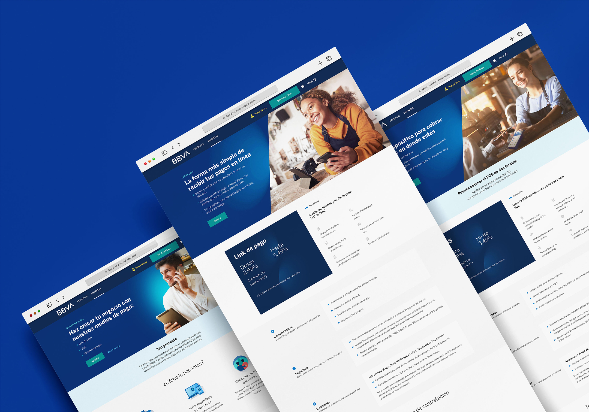
Multi-product landing pages — Link de pago, POS, and payment hub designed with consistent hierarchy
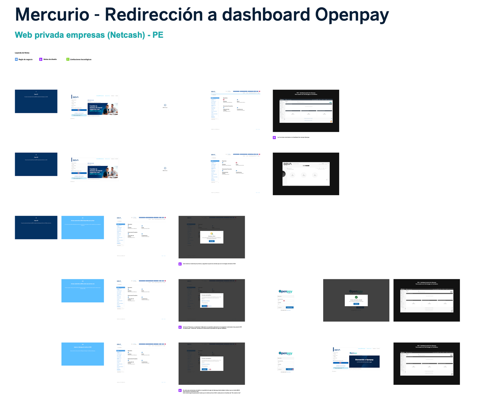
Figma documentation — annotated flow specs delivered to development for precise implementation
4+ digital products designed and shipped
Consistent UI across web and mobile platforms
Design system applied at scale across all deliverables
Full annotated Figma specs for dev handoff
Transactional flows improved for clarity and trust
Expertise
What I do
Product Design
End-to-end: discovery, wireframes, prototypes, validation, and delivery — always close to PMs and engineers.
Design Systems
Scalable component libraries with tokens, file governance, and documentation for multi-squad teams.
No-Code Build
Production-ready sites in Webflow and Framer — campaigns, landing pages, and MVPs without bottlenecks.
AI-Augmented
Faster visual assets, research synthesis, and prototyping using Midjourney, Lovable, and ChatGPT.
Let's talk
Ready to build
something great?
Open to full-time roles, freelance projects, and consulting. Remote-ready from Lima, Perú.